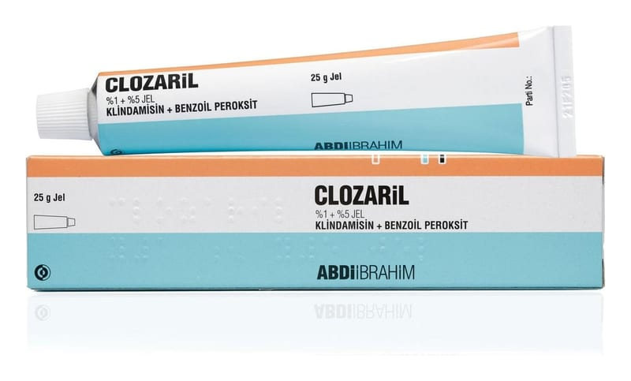

Clozaril %1+%5 Jel, 25 Gram

Ne için kullanılır
KT · Bölüm 1CLOZARİL, klindamisin ve benzoil peroksit içermektedir ve anti-akne preparatları olarak isimlendirilen ilaç grubuna dahildir.
Klindamisin, aknedeki bakterilere karşı etkinliği olan bir antibiyotiktir. Benzoil peroksit komedonların (siyah nokta ve beyaz nokta) azaltılmasında etkilidir. Aynı zamanda aknedeki bakterileri öldürücü etkiye de sahiptir ve cildi daha az yağlı yapar.
CLOZARİL
hafif ila orta düzeydeki akne tedavisinde kullanılıp, aşağıda belirtilen hususlarda yardımcı olur: • Aknelere sebep olan bakterilerin azaltılması • Kırmızı, iltihaplı akne sayısının azaltılması • Siyah nokta, beyaz nokta ve akneli bölgelerin tedavisi
CLOZARİL, jel formunda olup, 25 gramlık tüplerde bulunmaktadır. CLOZARİL, 12 yaş üstü ergen ve yetişkinlerin kullanımına uygundur.